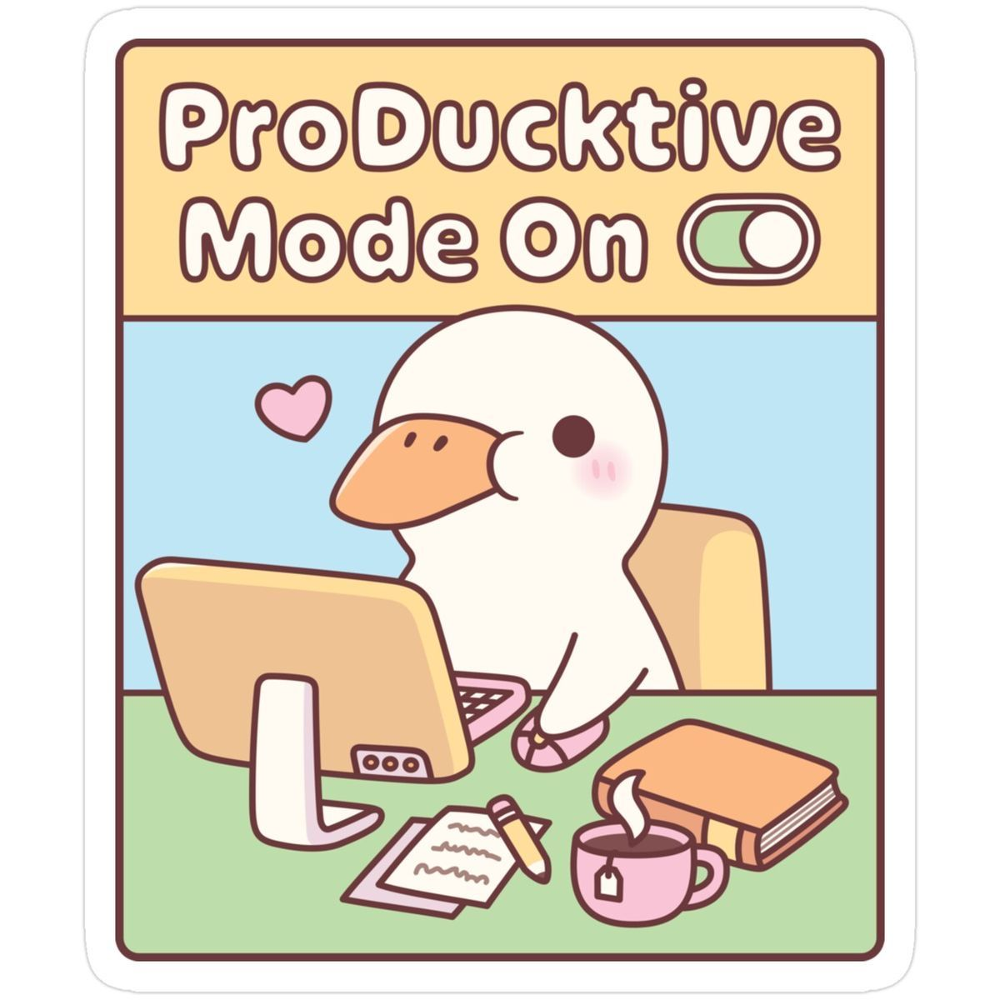

_ About _

Studium is a simple and modern productivity website designed to help students stay focused and organized. It provides a clean workspace where users can manage their tasks, track their progress, and improve their study habits.
Fast & Simple
Studium is easy to use and helps you focus immediately without distractions.
Dark Mode
Study comfortably anytime with a dark mode option for your eyes.